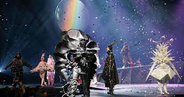
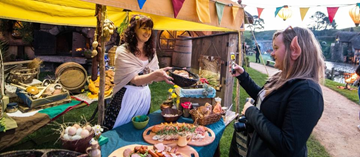
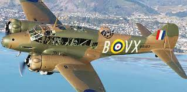
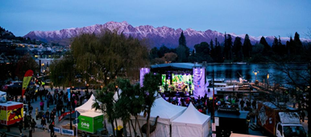
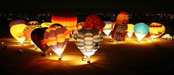
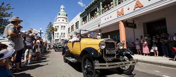
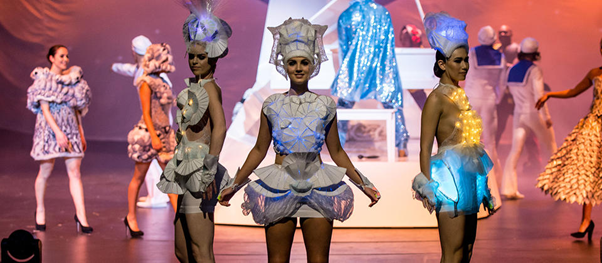
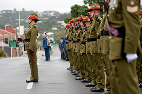

DUNEDIN FRINGE FESTIVAL  A festival featuring theatre, music, dance, comedy and visual arts, an 11-day event in March that highlights cutting-edge art to support emerging artists. HOBBIT DAY  Celebrated on September 22nd, Hobbit Day celebrates the birthdays of hobbits Bilbo and Frodo Baggins, a huge party with lots of food, dancing and fireworks. WARBIRDS OVER WANAKA  It is a famous Warbird aircraft event, but also the floor exhibitions, the aircraft presentation consists of Warhorse reactor groups and a series of pyrotechnics. QUEENSTOWN WINTER FESTIVAL  An event held in the city of Queenstown, held since 1975, this celebration takes place in a very famous winter town, called the biggest winter party in the Southern Hemisphere, with food, music and more. iD DUNEDIN FASHION WEEK A fashion festival in the city of Dunedin, takes place in March or April, takes place since 1999, with NZ and emerging international designers (example of the pieces presented in the window in the photo above). BALLOONS OVER WAIKATO  An annual hot air balloon festival held in Hamilton, New Zealand since 1999, runs for five consecutive days and is attended by hundreds of balloonists, both local and foreign. ART DECO WEEKEND  This event lasts for three days, with art, history, architecture, culture, and various entertainment. This celebration is the longest-running free community cultural festival. WORLD OF WEARABLE ART  World of Wearable Awards Show is a huge theatrical event where international designers compete in fashion, costumes, art and design. It is considered the biggest festival of all time, around 60,000 people attend this event, which is held in the city of Wellington, New Zealand. ANZAC DAY  Anzac Day is a celebration so that on April 25th everyone remembers the soldiers who fought for their country in the battle of Gallipoli, Turkey, in World War I, this honor is held both in New Zealand and Australia.